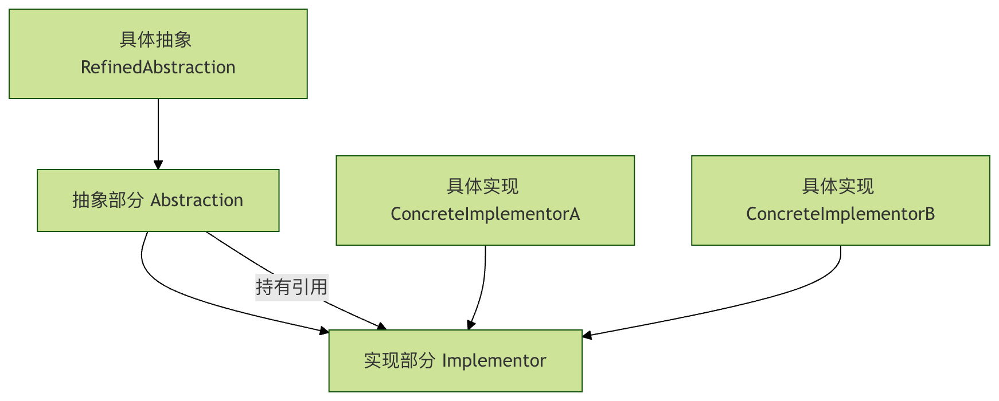

Python Bridge Pattern
The Bridge Pattern is a structural design pattern that separates the abstraction from the implementation so that they can vary independently. In simple terms, it issplitting the multiple varying dimensions of a thing apart, allowing each dimension to be extended independently.。
Bridge Pattern Metaphor in Daily Life
Imagine the relationship between a remote control and a TV:
- Remote control(abstraction part): provides a control interface (power, volume, channel)
- TV(implementation part): actually performs operations (Sony TV, Samsung TV, Xiaomi TV)
The remote control does not need to know which specific TV it is, and the TV does not need to know which remote control it is. They are connected through a "bridge" and can be upgraded independently.
Why Do We Need the Bridge Pattern?
Limitations of the Traditional Approach
Suppose we want to design a graphics drawing system that supports different shapes and colors:
Example
class RedCircle:
def draw(self):
print("Draw red circle")
class BlueCircle:
def draw(self):
print("Draw blue circle")
class RedRectangle:
def draw(self):
print("Draw red rectangle")
class BlueRectangle:
def draw(self):
print("Draw blue rectangle")
# Every time a color or shape is added, a new class needs to be created
# 3 colors × 3 shapes = 9 classes!
Advantages of the Bridge Pattern
Example
class Color:
"""Color interface - implementation part"""
def apply_color(self):
pass
class Shape:
"""Shape abstraction - abstraction part"""
def __init__(self, color):
self.color = color # The key to bridging!
def draw(self):
pass
# Only need: 3 colors + 3 shapes = 6 classes
# Instead of: 3 × 3 = 9 classes
Core Structure of the Bridge Pattern
Let's understand the components of the Bridge Pattern through a complete example:

Four Key Roles
- Abstraction: defines the abstract interface and maintains a reference to the implementation part
- Refined Abstraction: extends the abstract interface
- Implementor: defines the implementation interface
- Concrete Implementor: concretely implements the interface
Complete Code Example: Graphics Drawing System
Step 1: Define the Implementation Part Interface (Color)
Example
class Color(ABC):
"""Color interface - implementation part"""
@abstractmethod
def apply_color(self):
pass
class Red(Color):
"""Concrete implementation - Red"""
def apply_color(self):
return "Red"
class Blue(Color):
"""Concrete implementation - Blue"""
def apply_color(self):
return "Blue"
class Green(Color):
"""Concrete implementation - Green"""
def apply_color(self):
return "Green"
Step 2: Define the Abstraction Part (Shape)
Example
"""Shape abstraction - abstraction part"""
def __init__(self, color: Color):
self.color = color # The key to bridging: hold a reference to the implementation part
@abstractmethod
def draw(self):
pass
class Circle(Shape):
"""Concrete abstraction - Circle"""
def draw(self):
color_name = self.color.apply_color()
print(f"Draw a circle in {color_name}")
class Rectangle(Shape):
"""Concrete abstraction - Rectangle"""
def draw(self):
color_name = self.color.apply_color()
print(f"Draw a rectangle in {color_name}")
class Triangle(Shape):
"""Concrete abstraction - Triangle"""
def draw(self):
color_name = self.color.apply_color()
print(f"Draw a triangle in {color_name}")
Step 3: Use the Bridge Pattern
Example
def main():
# Create color implementation
red = Red()
blue = Blue()
green = Green()
# Create shape abstraction and bridge color implementation
red_circle = Circle(red)
blue_rectangle = Rectangle(blue)
green_triangle = Triangle(green)
# Draw the shape
print("=== Drawing Results ===")
red_circle.draw() # Output: Draw a red circle
blue_rectangle.draw() # Output: Draw a blue rectangle
green_triangle.draw() # Output: Draw a green triangle
# Flexible combination: red rectangle
red_rectangle = Rectangle(red)
red_rectangle.draw() # Output: Draw a red rectangle
if __name__ == "__main__":
main()
Practical Application Scenarios
Scenario 1: Message Sending System
Example
# Implementation part: message sending method
class MessageSender(ABC):
@abstractmethod
def send(self, message):
pass
class EmailSender(MessageSender):
def send(self, message):
return f"Send via email: {message}"
class SMSSender(MessageSender):
def send(self, message):
return f"Send via SMS: {message}"
class WeChatSender(MessageSender):
def send(self, message):
return f"Send via WeChat: {message}"
# Abstraction part: message type
class Message(ABC):
def __init__(self, sender: MessageSender):
self.sender = sender
@abstractmethod
def send(self):
pass
class UrgentMessage(Message):
def send(self):
message = "[Urgent] " + self.get_content()
return self.sender.send(message)
def get_content(self):
return "A system exception occurred, please handle it immediately!"
class NormalMessage(Message):
def __init__(self, sender: MessageSender, content):
super().__init__(sender)
self.content = content
def send(self):
return self.sender.send(self.content)
# Usage example
def message_example():
email_sender = EmailSender()
sms_sender = SMSSender()
# Urgent message sent via SMS
urgent_sms = UrgentMessage(sms_sender)
print(urgent_sms.send()) # Send via SMS: [Urgent] A system exception occurred, please handle it immediately!
# Normal message sent via email
normal_email = NormalMessage(email_sender, "Monthly report has been generated")
print(normal_email.send()) # Send via email: Monthly report has been generated
message_example()
Scenario 2: Device Remote Control System
Example
class Device(ABC):
@abstractmethod
def turn_on(self):
pass
@abstractmethod
def turn_off(self):
pass
@abstractmethod
def set_volume(self, volume):
pass
class TV(Device):
def turn_on(self):
return "TV is on"
def turn_off(self):
return "TV is off"
def set_volume(self, volume):
return f"TV volume set to: {volume}"
class Radio(Device):
def turn_on(self):
return "Radio is on"
def turn_off(self):
return "Radio is off"
def set_volume(self, volume):
return f"Radio volume set to: {volume}"
# Abstraction part: remote control
class RemoteControl:
def __init__(self, device: Device):
self.device = device
def toggle_power(self):
return "Toggle power state"
def volume_up(self):
return "Volume up"
def volume_down(self):
return "Volume down"
class AdvancedRemoteControl(RemoteControl):
def mute(self):
return "Mute mode"
def set_channel(self, channel):
return f"Switch to channel: {channel}"
# Usage example
def remote_example():
tv = TV()
radio = Radio()
basic_remote = RemoteControl(tv)
advanced_remote = AdvancedRemoteControl(radio)
print(basic_remote.toggle_power()) # Toggle power state
print(advanced_remote.mute()) # Mute mode
remote_example()
Comparison of Advantages of the Bridge Pattern
| Feature | Traditional Approach | Bridge Pattern |
|---|---|---|
| Scalability | Poor, requires modifying existing code | Good, can be extended independently |
| Number of classes | Many, prone to class explosion | Few, grows linearly |
| Maintainability | Difficult, a small change affects everything | Easy, separation of concerns |
| Flexibility | Fixed combinations | Dynamic composition at runtime |
Best Practices and Considerations
When to Use
✅ Situations suitable for using the Bridge Pattern:
- When you need to extend independently across multiple dimensions
- When you need to switch implementations at runtime
- When you need to avoid a permanent binding between abstraction and implementation
- When inheritance would make the class hierarchy too complex
❌ Situations where it is not suitable:
- When there are few varying dimensions and no complex design is needed
- When there is a strong coupling relationship between abstraction and implementation
Common Mistakes and How to Avoid Them
Example
class BadShape:
def __init__(self, color_type):
if color_type == "red":
self.color = Red()
elif color_type == "blue":
self.color = Blue()
# Still need to modify this class to add a new color
# Correct approach: dependency injection
class GoodShape:
def __init__(self, color: Color): # Depend on interfaces, not concrete implementations
self.color = color
Practice Tasks
Exercise 1: Extend the Graphics System
Please add the following features to the graphics system:
- Add a new color (yellow)
- Add a new shape (ellipse)
- Create a yellow ellipse and draw it
Exercise 2: Design a Payment System
Design a payment system with the following requirements:
- Payment methods: Alipay, WeChat Pay, bank card
- Payment types: regular payment, installment payment, combined payment
- Implemented using the Bridge pattern to ensure that payment methods and payment types can be extended independently
Summary
The Bridge pattern, throughseparating abstraction and implementation,provides great flexibility. Its core idea is:
- Identify dimensions of variation: Find multiple dimensions in the system that may change independently
- Establish a bridge: Connect different dimensions through composition relationships
- Independent expansion: Each dimension can develop and change independently